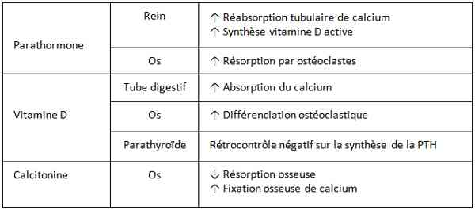

Bienvenue Sur Medical Education
Hypercalcémie
Spécialité : metabolisme /
Points importants
-
Aucune sémiologie typique mais y penser devant tout symptôme digestif, neurologique ou cardiovasculaire chez un patient à risque (néoplasie, endocrinopathie)
-
ECG important à la recherche de signe de gravité
Présentation clinique / CIMU
SIGNES FONCTIONNELS
Présentation clinique / CIMU
SIGNES FONCTIONNELS
Tableau clinique d'une crise hypercalcémique aiguë
- Fièvre, palpitations
- Mort subite par fibrillation ventriculaire
- Soif (déshydratation)
- Troubles de vigilance
- Douleurs pseudo-chirurgicales, vomissements
Tableau clinique d'une hypercalcémie chronique
- Asthénie, anorexie
- Polyurie, polydipsie
- Troubles psychiatriques, faiblesse musculaire
- Constipation, nausées, vomissements
CONTEXTE
Terrain et Antécédents
- Hyperparathyroïdie
-
Autres endocrinopathies :
- hyperthyroïdie
- phéochromocytome
- insuffisance surrénale
- acromégalie
- Maladie de Paget
- Néoplasie (sein, prostate, myélome, lymphome, leucémie , poumon , rein , ovaire ?...)
- Insuffisance rénale chronique
- Granulomatose (sarcoïdose)
Traitement usuel
- Lithium
- Diurétiques thiazidiques
- Vitamine D
- Vitamine A
EXAMEN CLINIQUE
Tableau clinique d'une crise hypercalcémique aiguë
- Fièvre, tachycardie
- Mort subite par FV
- Insuffisance rénale aiguë
- Signes de déshydratation voire choc
- Troubles de vigilance, convulsions
- Douleurs pseudo-chirurgicales
Tableau clinique d'une hypercalcémie chronique
- Hypersensibilité aux digitaliques et à l'hypokaliémie
- HTA
- Polyurie osmotique, lithiase, insuffisance rénale
- Troubles psychiatriques, faiblesse musculaire
EXAMENS PARACLINIQUES SIMPLES
ECG
- Tachycardie, QT court, trouble du rythme ventriculaire
- Troubles de la conduction (BSA, BAV I)
Signes paracliniques
BIOLOGIQUE
-
Calcémie totale, phosphorémie :
-
calcul de la calcémie corrigée = calcémie mesurée/[ (protidémie/160)+0,55] :
-
calcémie corrigée > 3,50 ou > 3mmol/L avec signes cliniques : hypercalcémie sévère
-
calcémie corrigée < 3,50 sans signes cliniques : hypercalcémie non sévère
-
Protidémie
-
Créatinine, ionogramme sanguin (insuffisance rénale)
IMAGERIE
-
Calcifications : rein, artères, articulation, pancréas
Diagnostic étiologique
-
calcul de la calcémie corrigée = calcémie mesurée/[ (protidémie/160)+0,55] :
- calcémie corrigée > 3,50 ou > 3mmol/L avec signes cliniques : hypercalcémie sévère
- calcémie corrigée < 3,50 sans signes cliniques : hypercalcémie non sévère
Diagnostic étiologique
Hyperparathyroïdie
- Primaire : adénome, hyperplasie
- Secondaire : insuffisance rénale chronique
Néoplasie
-
Par ostéolyse :
- cancer du sein métastasé
- myélome
- lymphome
- leucémies...
-
Sécrétion tumorale de PTHrP :
- poumons
- reins
- ovaires
- sein non métastasé...
Plus rares (pas d'hypercalcémie sévère en général)
- Intoxication à la vitamine D
- Syndrome des buveurs de lait
- Traitement par lithium
- Apports importants en vitamine A
- Endocrinopathies
- Maladies granulomateuses
- Immobilisation prolongée, apesanteur
Traitement
Dans tous les cas
- Arrêt des apports calciques et de traitement hypercalcémiant
- Réhydratation par sérum salé isotonique : 2 à 4 L/ 24h (en fonction de l'état cardiovasculaire)
Si Signes ECG ou hypercalcémie sévère clinique ou biologique
- Surveillance scopique
- Appel du réanimateur pour hospitalisation
- Perfusion de zolendronate (Zometa®) 4 mg IVL sur 5 min
Si absence de signes ECG et hypercalcémie non sévère clinique et biologique
- Continuer traitement par hydratation
- Perfusion de zolendronate (Zometa®) possible
Si Myélome connu ou hypervitaminose D (intoxication, sarcoïdose) et après avis spécialisé et en l'absence de signe d'infection
- Corticothérapie possible : 200 à 300 mg d'hémisuccinate d'hydrocortisone en IV (ou équivalent 60 mg de solumédrol)
- Pas d'indication aux diurétiques aux urgences
MEDICAMENTS
- Zolendronate (Zometa®) 4 mg IVL sur 5 min
- Sérum salé isotonique : 2 à 4 L/24h
Surveillance
CLINIQUE
-
Scopique si hypercalcémie corrigée > 3,50 mmol/L ou signe clinique de sévérité ou si signes électrocardiographique
PARACLINIQUE
-
Calcémie
-
ECG
Devenir / orientation
CRITERES D'ADMISSION
-
Une fois la calcémie contrôlée (< 3,0 mmol/L), transfert en Service Spécialisé pour bilan étiologique et décision thérapeutique à long terme
CRITERES DE SORTIE
-
Si hypercalcémie chronique connue et non symptomatique et après avis du médecin référent ou spécialiste, sortie possible avec bilan de contrôle
ORDONNANCE DE SORTIE
-
Hydratation abondante
-
Eviter tout régime hypercalcique (médicaments +++)
RECOMMANDATIONS DE SORTIE
-
Faire bilan sanguin de contrôle
-
Revoir médecin référent
Mécanisme / description
Devenir / orientation
CRITERES D'ADMISSION
- Une fois la calcémie contrôlée (< 3,0 mmol/L), transfert en Service Spécialisé pour bilan étiologique et décision thérapeutique à long terme
CRITERES DE SORTIE
- Si hypercalcémie chronique connue et non symptomatique et après avis du médecin référent ou spécialiste, sortie possible avec bilan de contrôle
ORDONNANCE DE SORTIE
- Hydratation abondante
- Eviter tout régime hypercalcique (médicaments +++)
RECOMMANDATIONS DE SORTIE
- Faire bilan sanguin de contrôle
- Revoir médecin référent
Mécanisme / description
Mécanisme de l'hypercalcémie
 _683 Tableau Mécanisme de l'hypercalcémie
Bibliographie
-
C. Guidon - Hypercalcémies sévères - EMC - Anesthésie-Réanimation, Volume 2, Issue 2, April 2005, Pages 114-131
-
S. Ralston - Hypercalcaemia and metastatic bone disease: is there a causal link? - The Lancet, Volume 320, Issue 8304, 23 October 1982, Pages 903-905
-
Singer FR - Treatment of hypercalcemia of malignancy with intravenous etidronate. A controlled, multicenter study. The Hypercalcemia Study Group - Arch Intern Med. 1991 Mar;151(3):471-6
-
FFRotstein S - Intravenous clodronate for the treatment of hypercalcaemia in breast cancer patients with bone metastases--a prospective randomised placebo-controlled multicentre study - Eur J Cancer. 1992;28A(4-5):890-3
-
Purohit OP - A randomised double-blind comparison of intravenous pamidronate and clodronate in the hypercalcaemia of malignancy. - Br J Cancer. 1995 Nov;72(5):1289-93
-
Gucalp R - Comparative study of pamidronate disodium and etidronate disodium in the treatment of cancer-related hypercalcemia. -J Clin Oncol. 1992 Jan;10(1):134-42
-
Major P - Zoledronic acid is superior to pamidronate in the treatment of hypercalcemia of malignancy: a pooled analysis of two randomized, controlled clinical trials - J Clin Oncol. 2001 Jan 15;19(2):558-67
-
Kristensen B - Prednisolone in the treatment of severe malignant hypercalcaemia in metastatic breast cancer: a randomized study. - J Intern Med. 1992 Sep;232(3):237-45
-
Ralston SH - Comparison of aminohydroxypropylidene diphosphonate, mithramycin, and corticosteroids/calcitonin in treatment of cancer-associated hypercalcaemia. Lancet. 1985 Oct 26;2(8461):907-10
-
Matsumoto T, Nagata N, Horikoshi N, Adachi I, Ohashi Y, Ogata E. - Comparative study of incadronate and elcatonin in patients with malignancy-associated hypercalcaemia. - J Int Med Res. 2002 May-Jun;30(3):230-43
Auteur(s) : Franck PERRUCHE